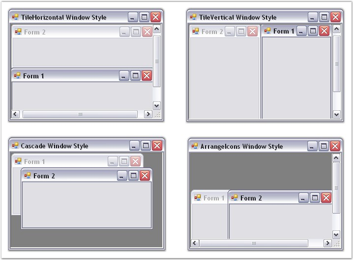

The windows in the TabbedMDI framework can be arranged in four different styles. To set the styles of the windows, the MDIParent form should be detached from the TabbedMDIManager.
 Note: The DetachFromMdiContainer method is
used to detach an MDIParent from the TabbedMDIManager.
Note: The DetachFromMdiContainer method is
used to detach an MDIParent from the TabbedMDIManager.
|
TabbedMDIManager Property |
Description |
|
WindowStyle |
Specifies the style for the windows of the TabbedMDIManager Control. The options include:
· TileHorizontal, · TileVertical, · Cascade and · ArrangeIcons. |
|
[C#]
//Detach the MDIParent form from TabbedMDIManager. this.tb.DetachFromMdiContainer(this, false);
//Arranges the multiple document interface Child forms in Horizontal style within the MDIParent form. this.LayoutMdi(MdiLayout.TileHorizontal); |
|
[VB.NET]
'Detach the MDIParent form from TabbedMDIManager. Me.tb.DetachFromMdiContainer(Me, False)
'Arranges the multiple document interface Child forms in Horizontal style within the MDIParent form. Me.LayoutMdi(MdiLayout.TileHorizontal) |

Figure 1086: Window Styles